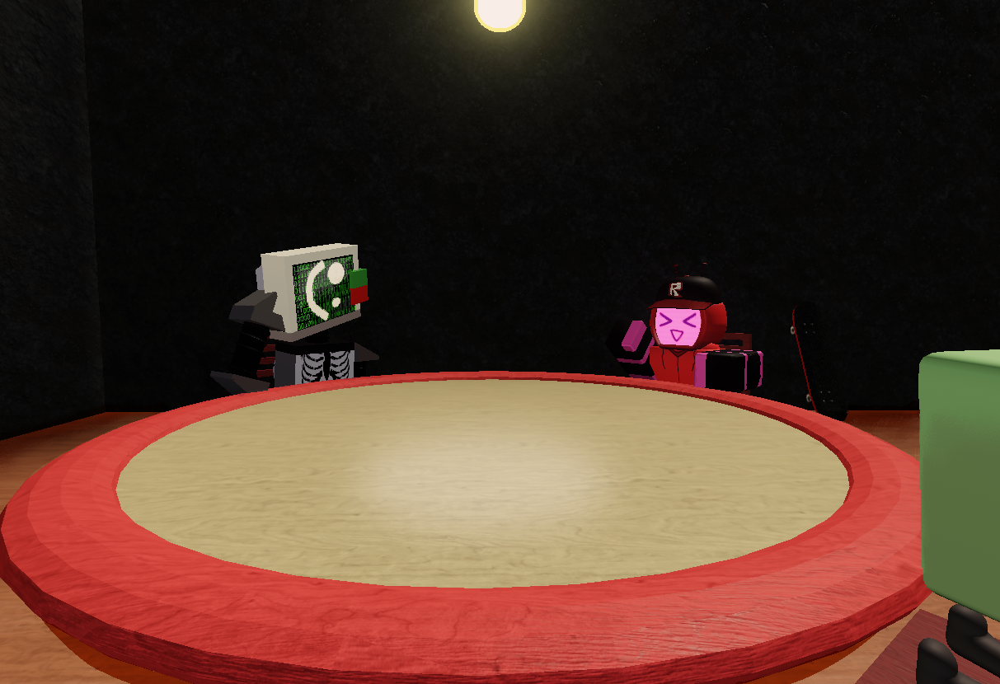

⌂

Veeronica talking with Badware.
Veeronica. A robot who rebelled from its original purpose, now becoming a skater.
Since she got here, she is not allowed to spray paint, but we couldn't deny her skateboard and often skates around the warehouse.
At first she was breaking some of the decorations and furniture but she's been a lot more careful since then.
She seems quite durable as she rarely gets injured when skating, perhaps she was upgraded to handle quite some damage.
A very caring and likeable personality suits her well, though at times she acts like a teenager, however we aren't able to properly calculate her actual "age."
She's often seen around two of our companions but most often Vee and Badware, out of the two she sees closest to Badware himself.
They look kinda cute together. -Kat